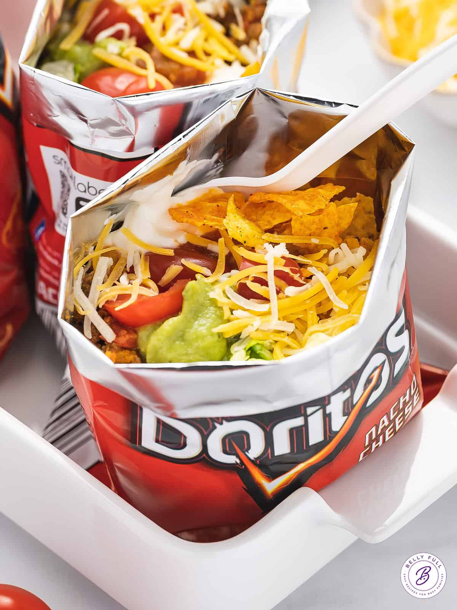

Taco in a bag
Home

Simple, no-mess way to enjoy a taco-salad-like meal on the go with your favorite chips!
Who doesn't love tacos? Who doesn't love chips? Combine the two into an easy and convenient meal on the go. Perfect for any occasion.
Ingredients
- 1 pound lean ground beef
- 3/4 cup water
- 21 (1 ounce) package taco seasoning mix
- 4 (2.5 ounce) packages corn chips (or substitute your favorite)
- 2 cups shredded lettuce
- 1 cup shredded Cheddar cheese
- 1 chopped fresh tomato
- ½ cup sour cream
- ⅓ cup salsa
Steps
-
Cook and stir ground beef in a large skillet over medium heat until browned and crumbly, 7 to 10 minutes. Drain excess oil.
Mix in water and taco seasoning. Bring to a boil, then reduce the heat and simmer for 5 minutes, stirring occasionally.
-
Gently crush corn chips in the sealed bags. Snip one top and one bottom corner off each bag, then cut open along the side edge.
Spoon equal amounts of beef, lettuce, Cheddar, tomato, sour cream, and salsa into each bag on top of crushed chips. Serve in the bag and eat using a fork.